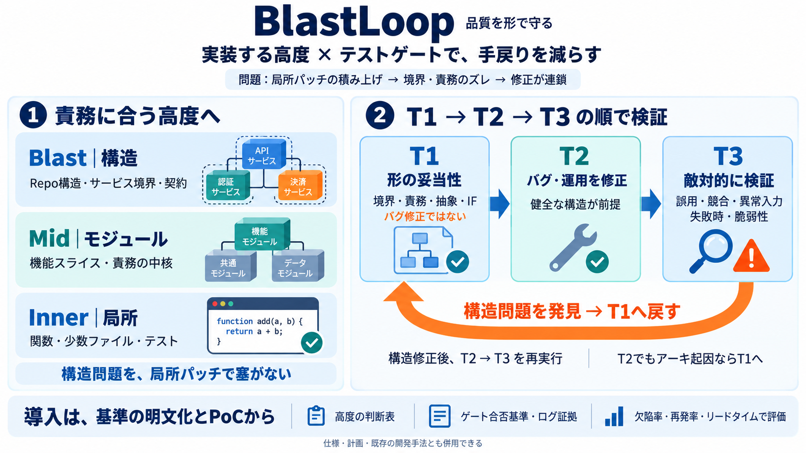

AIコーディングでテストと実装のエージェントを分離したら、コード品質が劇的に上がった話
speckit.implementはtasks.mdに忠実に従ったので、指示されたテストだけを書きました。当然の結果です。 一方、spec-impl-tddは全く違う動きをしました。各タスクに対してテストエージェントが先行するので、全ての…

AIコーディング・エージェントの実装を「高度（Blast/Mid/Inner）」と「テストゲート（T1→T2→T3）」で制御し、手戻りを減らす実務フレームワークです。
AIは開発速度を上げますが、「局所パッチの積み上げ」で境界の誤りや責務の置き違いが起きると、後から見つかって手戻りが大きくなります。
BlastLoopは「一律に書かせない」。変更の性質に応じて“どの高度に書くべきか”を決め、品質確認を T1→T2→T3 の順にゲート化します。
コード生成の高度は3段階。構造を変える仕事はBlast、責務の中核はMid、局所のユニットはInnerに寄せます（責任をズラさない）。
T1はバグ修正ではなく、コード形状の妥当性を判定します。T2は“構造が健全”な前提で、バグや運用上の問題を直接直します。
T3はエッジケース・誤用・競合やレース・奇妙な入力・脆弱性姿勢・ロールバック経路・失敗時挙動などを“攻撃的に”検証します。
T3で構造問題が見つかったら、T3→T1へ戻して構造的に修正してから、T2→T3を再実行します。局所で塞ぐのを防ぐためです。
「構造を変えるべき仕事」をInnerにやらせると、連鎖的な手戻りが起きます。BlastLoopは“高度”で書く場所を固定し、誤ルーティングの確率を下げます。
BlastLoopは「単一のエージェント作法」を押しつけません。高度選択（Blast/Mid/Inner）とテスト順序（T1→T2→T3）が核で、Spec Kit・vibe coding・ローカル実装プロンプト・赤/青テスト等をレイヤに組み込めます。
抜粋からは、T1/T2/T3の“合否基準”や、ログ/アーティファクトでゲートを通す具体が不足しています。導入時は HANDOFFS.md / AGENTS.md などで明文化が必須です。
BlastLoopは仕様ファースト等を否定しません。T1はバグ修正ではなく形状判定、T3はセキュリティだけではありません。
BlastLoopを導入するなら、概念理解だけでなく、HANDOFFS.md/AGENTS.md等でT1/T2/T3の判定基準と必要アーティファクトを確認し、PoCで定量評価して調整してください。
speckit.implementはtasks.mdに忠実に従ったので、指示されたテストだけを書きました。当然の結果です。 一方、spec-impl-tddは全く違う動きをしました。各タスクに対してテストエージェントが先行するので、全ての…
ただし、AIペンテストツールという言葉が指すものは大きく異なります。完全自律型のエージェントもあれば、ClaudeやGPTなどの別のモデルから操作されて初めて機能するバックエンドもあり、単独のツールではなく人間のテスターを支援するアシスタン…
もちろん、生産性向上は業務内容・ツール習熟度・コードの性質によって大きく変わります。55%向上というGitHub研究の最大値を直接適用するのは楽観的すぎますが、20〜30%でもROIは十分成立します。 この記事の内容を社内で使うなら 要…
| README.md | README.md | | | | RELEASE.md | RELEASE.md | | | | SECURITY.md | SECURITY.md | | | | TESTING.md | TES…
実際の環境でのパイプライン構築とデプロイの詳細にご興味はありませんか？2026 年 9 月 15 日～16 日にワシントン D.C. で開催されるサイバー防御サミットにぜひご参加ください。Mandiant は「How Mandiant Or…